The Eminent and renowned Sitar Vadhak from Vishnupur Gharana with numerous successful albums and world tours.
Know more
The Vishnupur Gharana meant essentially a Dhrupad Gharana, which originated in Vishnupur in the Bankura district of Bengal (now West Bengal) about 300 years ago and has its roots in the "Senia Gharana".
Learn morePerformed in Switzerland, Finland, Estonia, Cuba, Brazil, Panama, Guatemala, Mexico, Argentina, Chile, Nicaragua, Peru, Columbia, Venezuela, Costa Rica, Paraguay, USA, Armenia, Austria, Ireland, Holland, Germany, Sweden, South Africa, Reunion, South Korea, Hong Kong.
Browse photo galleryPandit Manilal Nag, a veteran sitar maestro from Calcutta and a contemporary of late Pandit Nikhil Banerjee is well known to the members and audience of Surdhwani as he won their hearts in 1990s.
A Non-Profit organization started and run by Subrata Dey registered by Govt. of Delhi nurturing and developing young talent
With numerous appreciations in from of publications in all forms of media, Subrata De has carved a niche for himself in the music industry.
Subrata De of Jamshedpur (Jharkhand-India) was initiated in the art of playing Hindustani Classical Music - Sitar at the tender age of seven under the guidance of Shri Amarjeet Singh of Jamshedpur and later on obtained training from Suramani Bauri Bandhu Sethi of Bhubaneswar, Orissa from where he has imbibed the essential elements of Sitar with great devotion and after 10 years he placed himself in the hands of Sitar Maestro Pandit Manilal Nag of Calcutta of Vishnupur Gharana, with strict discipline and sincerity ,to learn extensively the Dhrupad and Vadan Style(Gayaki), Tankari, Alapang, Gatkari etc. of Vishnupur Gharana and now has become an accomplished sitar player .His Father Shri Bhutnath De is also an eminent vocalist of Hindustani Classical Music. Now, Subrata is involved with various musical organisations as a lecturer in Sitar.
God's blessing and it may sound incredible, he has always kept his head bowed. Indian music is an ocean, and he thinks he is tinier than a drop. He realises that he exists because of the subject.
Subrata's Music is spontaneous expression of powerful emotions and his deep knowledge of the Sitar. Subrata's style retains the depth, resonance and sensitivity of "Sur" in Alap as well as laying stress on the subtle and lilting phrasing of the Jhala. Through this combination, he brings to perfection the delicacy and sentimental mood of every Raga. He is a master of improvisation and possesses the rare ability to breathe life and originality into a classical theme, thereby molding it into a living and captivating form. The outstanding qualities of Subrata's performances are his maturity, incredibly sweet and melodious presentation of his instrument, and his imaginative development in the true form of Vishnupur Gharana.
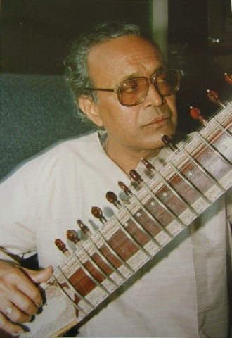
Guruji Pandit Manilal Nag, a veteran sitar maestro from Calcutta and a contemporary of late Pandit Nikhil Banerjee is well known to the members and audience of Surdhwani as he won their hearts in 1990s. He belongs to the Vishnupur Gharana, Manilal Nag is the 4th generation of the Nag familty which belonged to Vishnupur Gharana. He learnt from his father Gokul Nag and and grand father Govinda Chandra Nag son of Bauridas Nag. Manilal Nag is a "TOP" Grade artiste of All India Radio and Doordarshan (TV). One of the most popular and sought after concert sitarists of India, he has been regularly performing in music conferences all over India and abroad. He has extensively traveled in countries like UK, USA, Canada, France, Italy, Germany, Japan, Australia and many others for participating in musical concerts and festivals.
Gharana - The Vishnupur Gharana meant essentially a Dhrupad Gharana, which originated in Vishnupur in the Bankura district of Bengal (now West Bengal) about 300 years ago and has its roots in the "Senia Gharana". Ustad Bahadur Khan, descendent of Miyan Tansen came to Vishnupur at the invitation of Malla King Raghunath Singh Bahadur of Vishnupur (also spelled as bishnupur). From that time onwards Vishnupur became a famous of learning both Dhrupad music in the vocal and instrumental forms. Vishnupur was essentially a centre for dhrupad culture. The founding and expansion of this gharana was an event of great significance in the development of music in Bengal as it helped in expanding the culture of dhrupad in Bengal. The dhrupad of the Vishnupur gharana uses shuddha dhaivata in raga vasanta, a touch of komal nisada in the descending notes of bhairava. It has abandoned kadi madhyam in ramakeli, and uses suddha dhaivata in puravi and komal nisad in vehaga. It has also developed its own character with regard to rhythm.
"Swaranjali": A Holistic Platform ...
He runs a non-profit institution registered by Govt. of Delhi, named "Swaranjali" started in 2000 with a mission to bring to the fundamentals of Indian vocal music to those who would benefit most from classical music training the young. Based in Delhi, India, it caters to the needs of students by providing a platform to the upcoming artists of India.
Swaranjali is proud to offer a holistic approach to the teaching of music to young people, with a unique process that includes guidance on public performance. Swaranjali offers music appreciation courses to the students in order to create discerning listeners and spread awareness of the subtleties of the art. Every year Swaranjali organizes Festivals as well as "Baithak" (evening of house concerts) to promote the upcoming talents, young artists as well as renowned artists from all over India.
 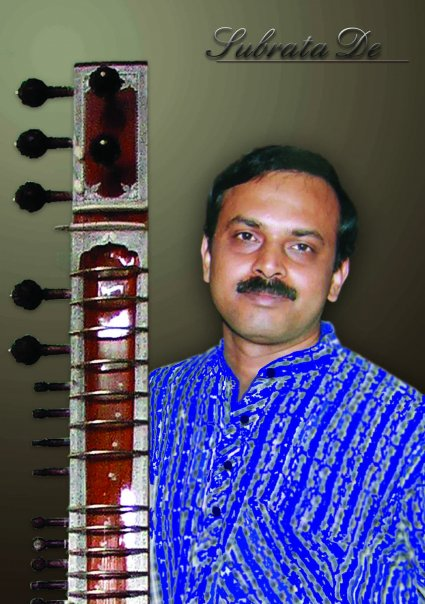
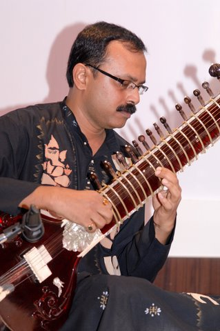
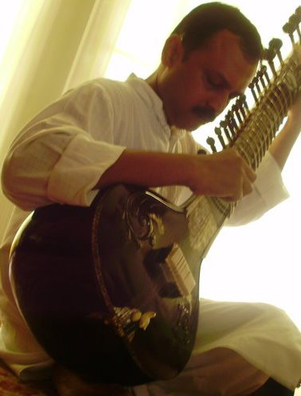
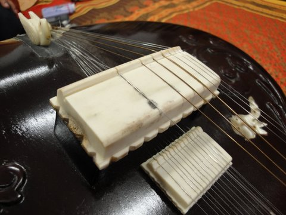
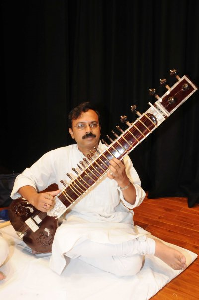
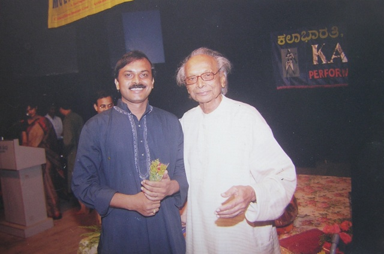
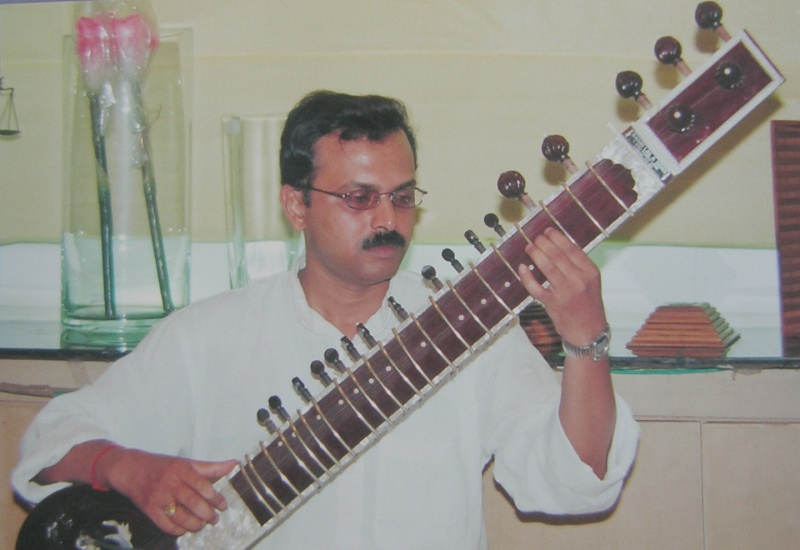
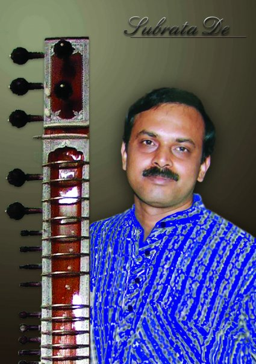
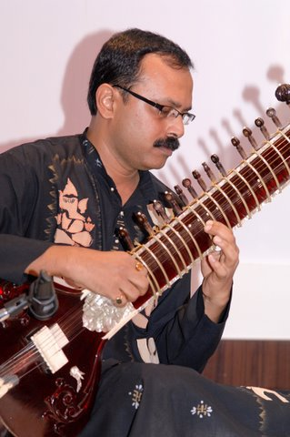
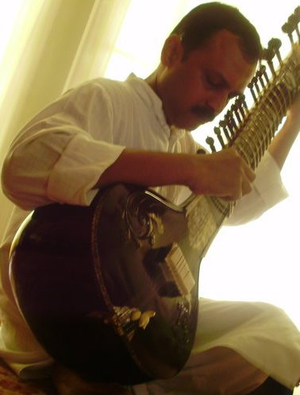
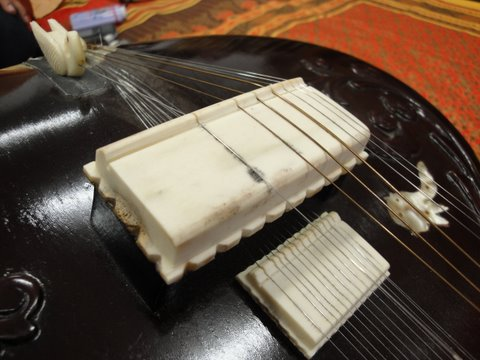
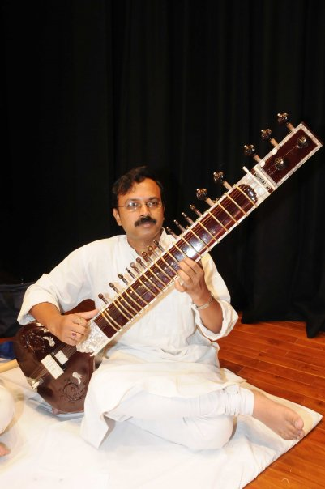
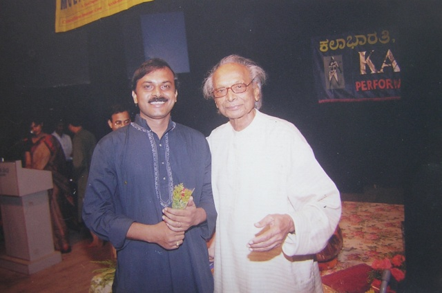
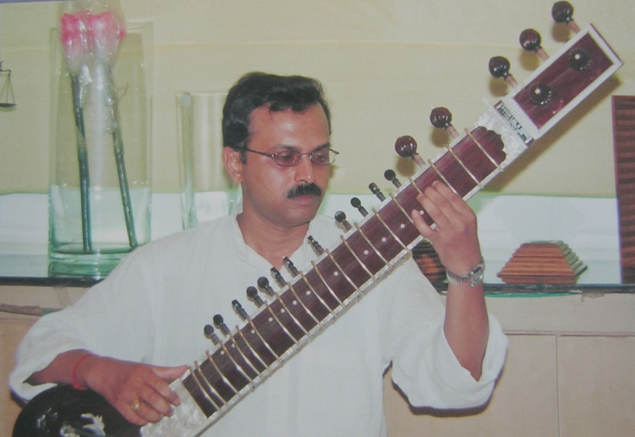
 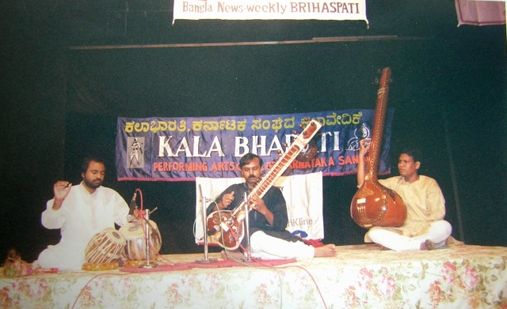
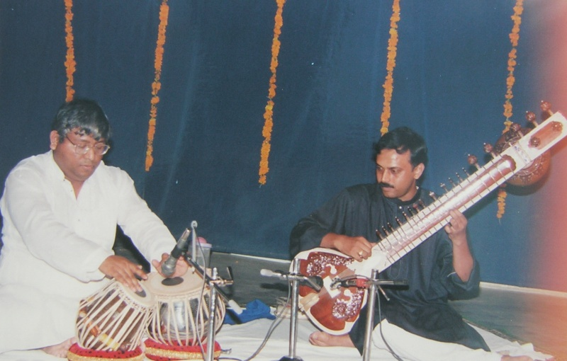
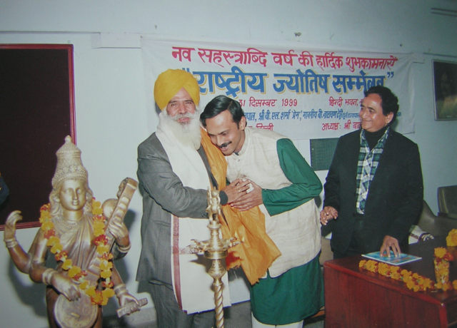
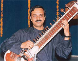
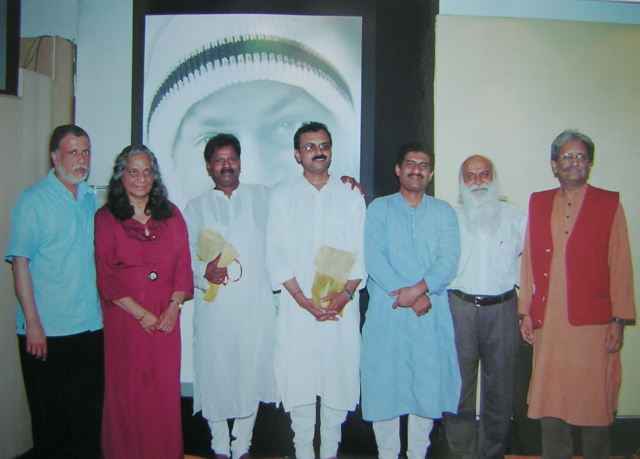
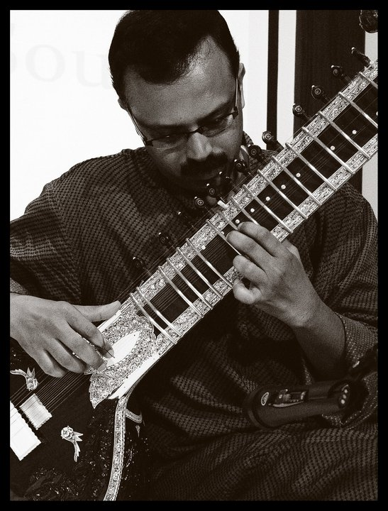
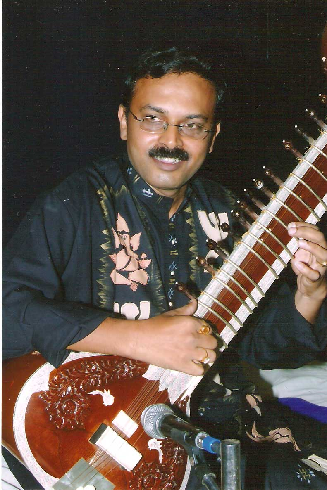
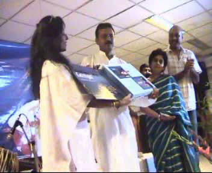
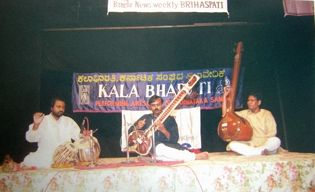
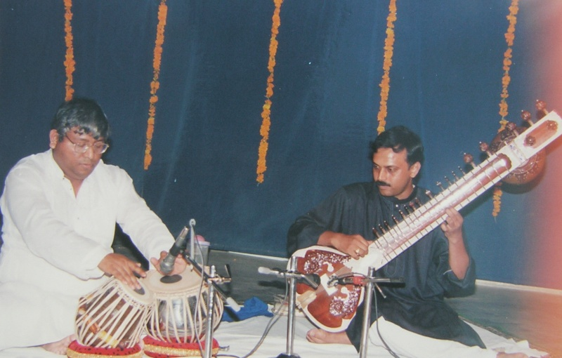
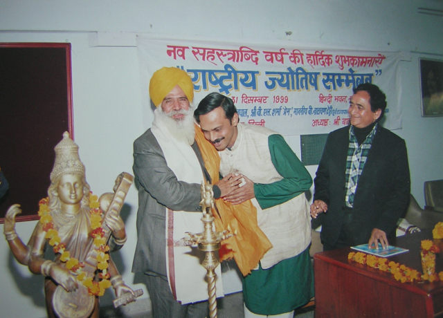
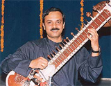
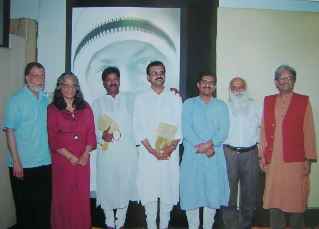
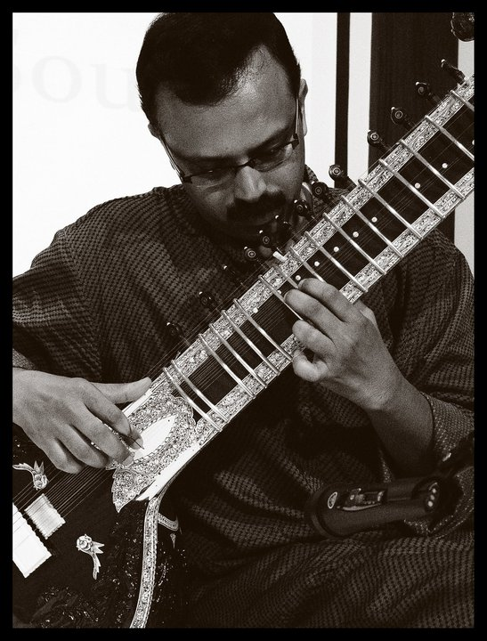
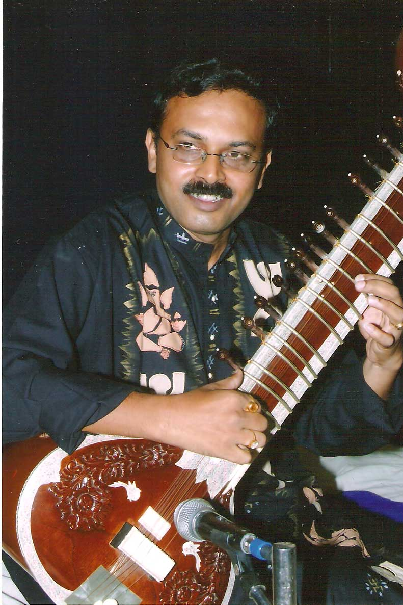
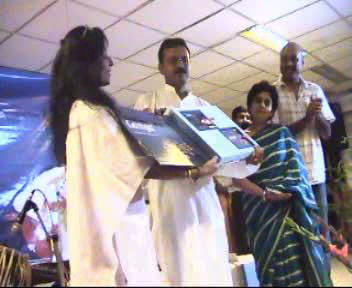
e-mail: sitarsubrata@gmail.com
e-mail: subrata_de@rediffmail.com
Mobile: +91 - 981-830-0319
Address: SWARANJALI, 1846/10, 2nd Floor, Govindpuri Extn, Kalkaji, New Delhi - 110019, India